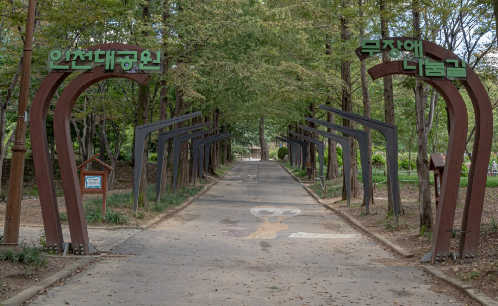
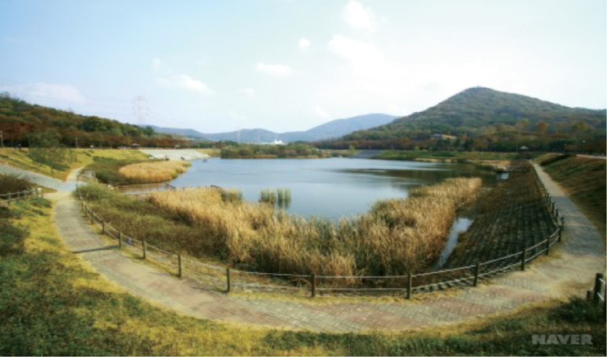

인천대공원
- 무장애 나눔길
- 인천대공원은 연간 400만 명의 시민들이 찾는 수도권의 대표적인 공원이며,
누구나 맑은 공기를 마음껏 마실 수 있는 휴식공간이다.
그리고 자연을 만끽할 수 있는 즐거움과 여유롭게 힐링할 수 있는 휴양공원이다.
연간 400만 명의 시민들이 찾는 수도권의 대표적인 공원이며, 누구나 맑은 공기를 마음껏
마실 수 있는 휴식공간이다.

인천대공원
- 인천대공원 호수
- 인천대공원은 남동구 장수동에 있는 공원으로 관모산(162m), 소래산, 거마산을 끼고 있다.
인천시에서 가장 큰 공원으로 계절별 운영시설이 조금씩 다르다. 특히 여름에는 물놀이장이 개장되기에
수많은 관광객들이 즐겨 찾는다. 다양한 볼거리도 많다.
인천대공원은 삶의 긴장 대신 한가롭고 여유로운 시간을 사람들에게 되돌려 준다.

인천대공원
- 인천대공원 벚꽃길
- 인천대공원은 행복이 모이는 공간이다. 아이들의 웃음소리와 연인들의 속삭임,
부부의 정겨운 대화가 공원에 가득하다. 공원을 감도는 녹색바람은 청명하고,
숲이 주는 그늘은 한낮의 태양을 저만치 떨어뜨려 놓는다.
계절마다 다른 옷으로 갈아입는다. 생명력 가득한 봄에 피는 벚꽃, 깊고 푸른 녹음이
우거지는 여름, 부는 바람에 춤추는 가을 낙엽, 소복하게 내려앉은 겨울 눈길···
화려하지 않아도 공원은 계절계절 정겨우리만치 아늑하다.